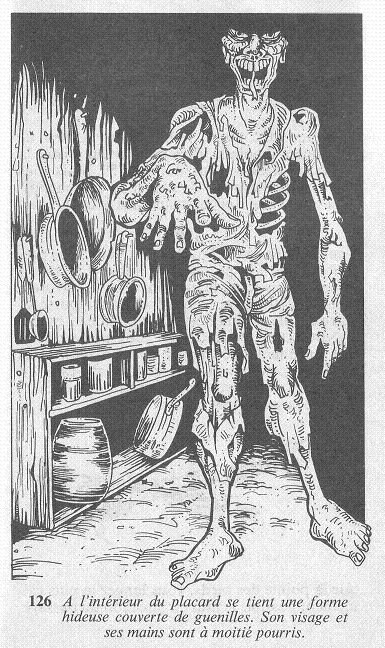

Vous saisissez la poignée de la porte que vous ouvrez en grand. Mais la vision qui s'offre à vous vous fait reculer d'horreur. A l'intérieur du placard, immobile, se tient une forme hideuse couverte de guenilles. Son visage et ses mains sont à moitié pourris, et la pestilence qui en émane vous fait chanceler.

Ses yeux s'ouvrent et sa gorge émet un abominable gargouillement, tandis que sa langue répugnante s'agite dans votre direction. La créature s'avance alors vers vous. Vous ajoutez 2 points à votre total de PEUR, et si vous êtes toujours en vie, vous allez devoir combattre cette GOULE. Vous pouvez saisir un des couteaux accrochés au mur, et l'utiliser comme une ARME. Dans ce cas, ajoutez 3 points à votre total d'HABILETÉ.
| HABILETÉ | ENDURANCE | |
| GOULE | 8 | 7 |